The Crownward Compact
Steady, and the place to start.
A medieval kingdom of honey timber, straw thatch and pale stone, with gold as the mark of rank. It trains the full set of soldiers and has no special rules to learn.
A fantasy real-time strategy game for iPhone
Grow a handful of villagers into a kingdom, then march on your rival.
Gather, build and fight your way through four ages, in a little world that goes from sunlight to torchlight while you play.
Coming to iPhone. It isn't on the App Store yet, and there's no public test build.
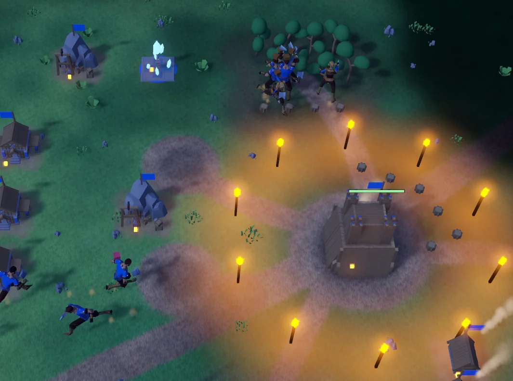
Crownfall is real-time strategy in the classic style. You start a match with a Town Centre, a handful of villagers and a few spearmen. Across the map, someone else is doing the same. Nobody waits for a turn.
The land is Eldoria, a frontier where rival realms compete for the Aether Wells, old sources of magic that stand out on the map for anyone to take. Hold a well and your villagers work faster, and the Aether it gives you pays for special late-game upgrades.
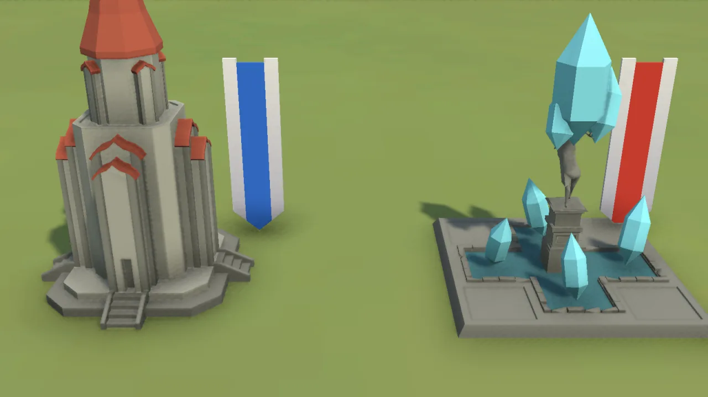
Send villagers for food, wood, stone and gold. When the near woods run out, trade at the Market or send carts to a trading post.
Twelve kinds of building, from Houses and Farms to the Stable, the Forge and a Watch Tower that shoots arrows.
Sixteen technologies. Upgrade lines promote your soldiers with new looks and names: a Spearman becomes a Pike Warden, then a Royal Guard.
Scouts, spearmen, archers, knights on horseback and battering rams. Your soldiers hit back and help each other without being told.
The world moves on while you play. Day turns to night and torches light up round your town. Deer and wolves roam the land, and neutral villages can be won over, by trade or by keeping them safe.
Every mode is you against one computer opponent, on our hand-built valley or a random map.
Destroy the enemy Town Centre.
The classic match: settle in, build up, then bring it down before it brings you down.
First town to 1,200 prosperity.
Your rival keeps its army at home and never attacks, so this is the one to play when you just want to build.
First to find 5 treasures.
Ruins, shrines and caches lie in the fog. Send your scouts out, and the ground you've explored stays clear.
Bring down the Bandit Lord.
Lead a Champion who grows stronger with every fight, and clear the bandit camps on your way to their boss.
Hold every landmark for 3 minutes.
Three landmarks stand between the camps. Take them all and keep them, while your rival comes for them too.
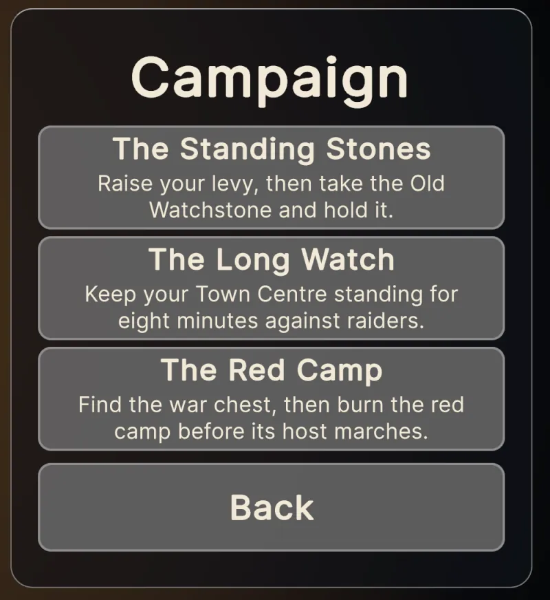
Three missions with their own goals, starting supplies and surprises.
To be straight with you: each mission has been won and lost in our automated tests, but no person has played them through by hand yet. Expect some rough edges.
We're working on the idea of a shared map, where your village stands on a plot of its own beside other players'. So far it's only a prototype running on our own computer. It isn't online, so nobody can play it yet, and the design may still change.
Easy, Normal and Hard, each in four styles of play.
No cheating. Difficulty changes how your rival thinks, never what it has.
Random maps are mirrored, so both sides get the same woods, mines and berries.
Save a match from the pause panel and pick it up with Continue.
Each age comes with a choice of bonus. Every building you own changes its look the moment you get there, in a puff of dust.
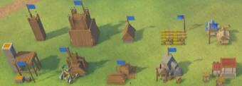
Timber, thatch and tents. You're getting by.
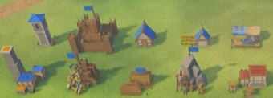
Stone ground floors, half-timbering and your colours on the roof tiles.
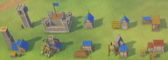
Stone keeps, towers and long banners. Aether buys Aetherforged Arms.
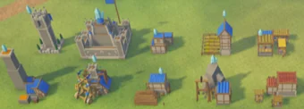
Taller, gilded and glowing with crystals. Aether buys Arcane Wards.
The same buildings in each age, from our art sheet.
Steady, and the place to start.
A medieval kingdom of honey timber, straw thatch and pale stone, with gold as the mark of rank. It trains the full set of soldiers and has no special rules to learn.
Quick, and hard to pin down.
Woodland folk who gather wood 20% faster and see further. Quick Thornguard and long-range Woodland Rangers take the place of spearmen and archers. They're great at scouting and skirmishing, but weaker in a long, straight fight. This realm is the newer of the two and is still being balanced.
Our design notes sketch two more realms, of mountain smiths and arcane scholars. They're only ideas for now, not something we can promise.
Train them at your Town Centre, one of each. A princess lends her gift to your units standing near her, and it reaches further as she gains levels. Each also has one power. Use it yourself or leave it on Auto.
The gift of healing
Carries a staff with a green orb. Your units near her heal.
Healing Wave: mends everyone around her at once.
The gift of valour
A warrior with a sword and a crimson war banner. Your units near her strike harder.
Battle Cry: for a while, her soldiers hit harder and march faster.
The gift of swiftness
Carries an open book. Your units near her move and gather faster.
Gust of Wind: speeds up her units, and blows nearby enemies back and slows them.
Real captures from the game, some cropped. The art isn't final. Open any picture to see it larger.
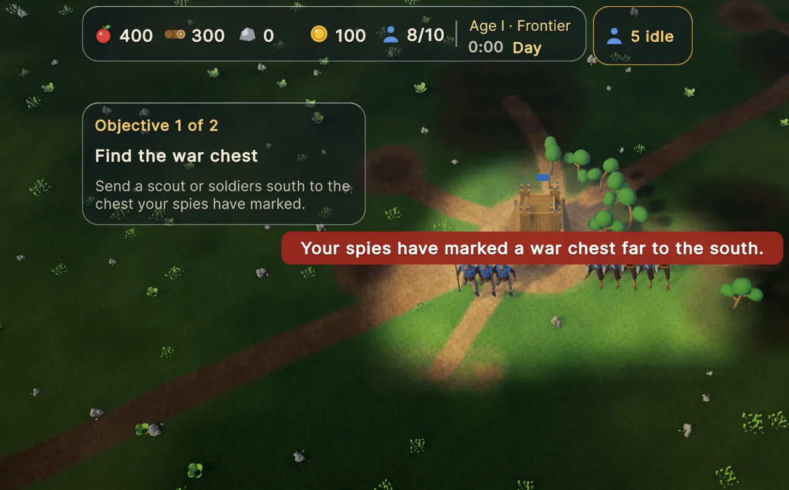
The Red Camp begins: your spies have found something.
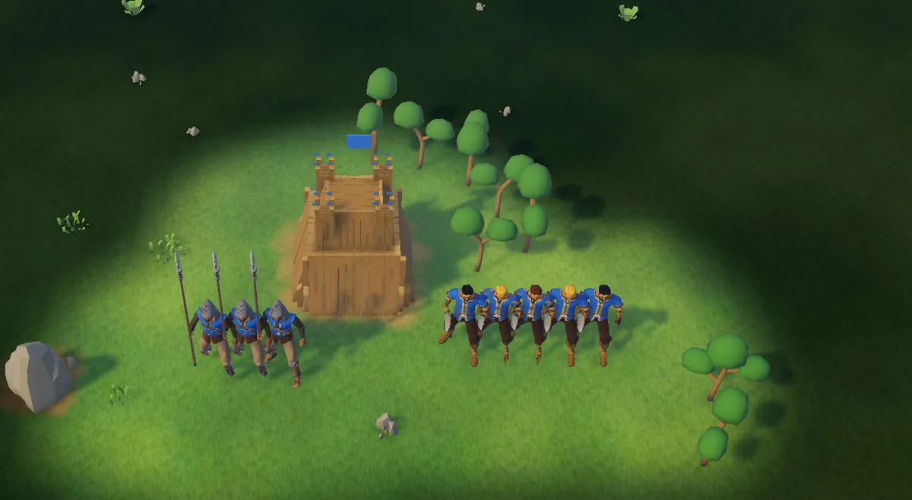
A random map, in the first seconds of a match. The fog is still close.
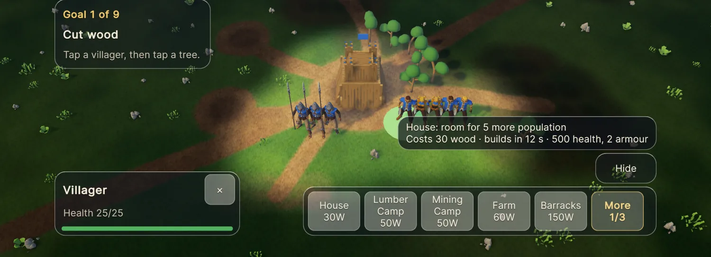
Pick a villager and the build menu opens, with a note on what each building gives you.
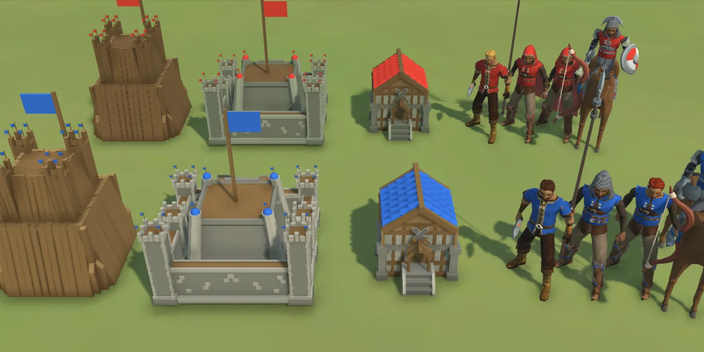
Up close, from our art sheet: the same town in two teams' colours.
Crownfall is made to be played in landscape on a phone, with no mouse and no tiny menus. The panels are glass, so the battle shows through, and they stay clear of the Dynamic Island and the home bar.
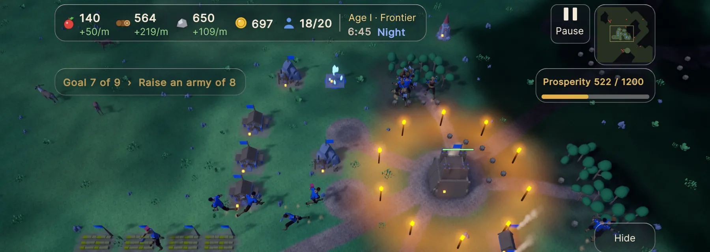
Six minutes into a Prosperity match, on our own iPhone.
Crownfall is still being made. Here's the honest picture.
Not yet. Crownfall isn't on the App Store or TestFlight. For now we install it directly on our own iPhone to test it. If you'd like to play, let us know on the support page. We can't promise a place yet, but it helps to know you're there.
We don't have a release date or a price yet. When we do, you'll find them here.
iPhone comes first. So far it has been played on an iPhone 17 Pro. A Mac version builds and a web version compiles, but neither has been properly tested, and neither has iPad, so we aren't promising those yet.
We hope so. The goals panel leads you through your first match, Easy gives you room to learn, and in Prosperity mode your rival never attacks.
Not at the moment. Crownfall is a game you play alone against the computer. World, the shared map, is the only online part we've planned, and it isn't running yet. Ranked online play and naval battles aren't part of the plan for now.
No. The single-player modes need neither, and your saves stay on your device.
On first launch it asks whether you'd like to keep a small play-stats log. It's only kept on your device and nothing leaves it, and there's a switch for it in settings. Our privacy page has more.
The world and its people are built from free CC0 art by Quaternius, Kenney and KayKit, which we've adapted to fit. Every screenshot on this page comes from the game itself.
There's no mailing list here, and nothing to sign up for. If you'd like to try Crownfall or have a question, our support page shows you how to reach us. Messages there are public, so leave out your personal details.
Go to the support page